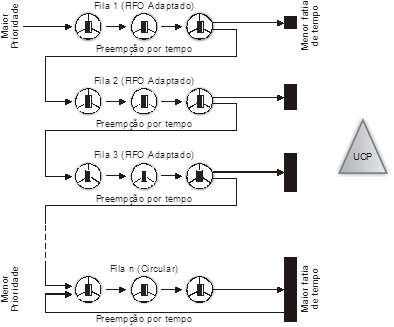

O Mac OS utiliza uma modificação do escalonador OSFMK (Open Software Fundation MkLinux), adicionado o tratamento de interatividade e baseado numa variante do algoritmo por múltiplas filas com realimentação com divisão de filas de prioridades. Numa situação em que a aplicação não faça uma operação de I/O, um processo de tempo real pode ser penalizado em sua fila de prioridades, sendo inclusive migrado para o grupo de processos Normal, visando um maior desempenho e justiça entre os processos. Os grupos de fila de maior prioridade são os processos de tempo real e de menor prioridade os processos de prioridade ao usuário Normal.
